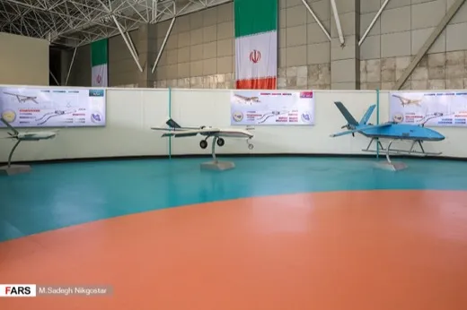
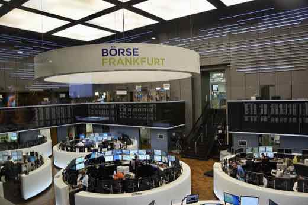
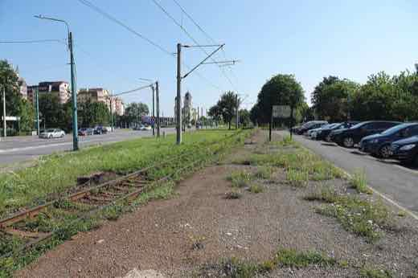
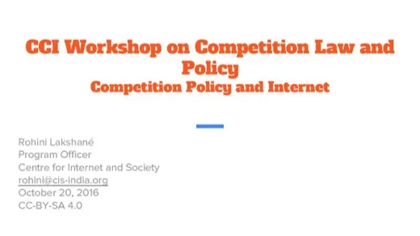
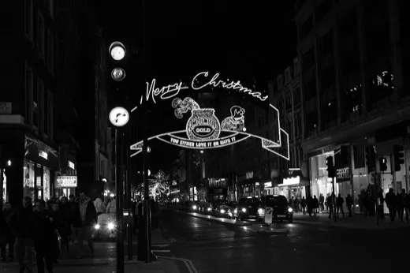
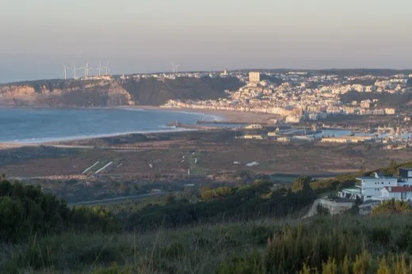
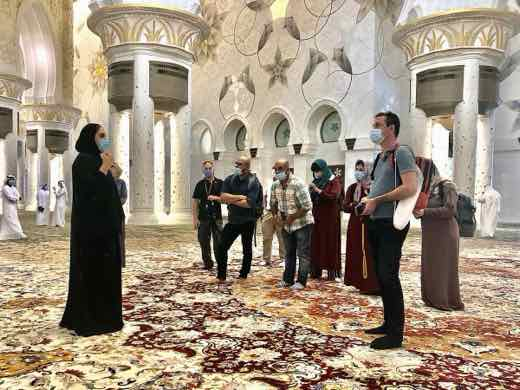
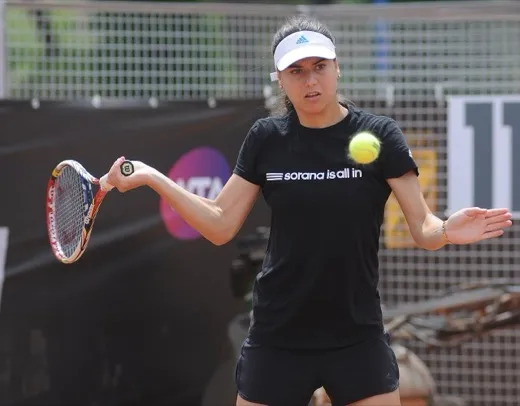
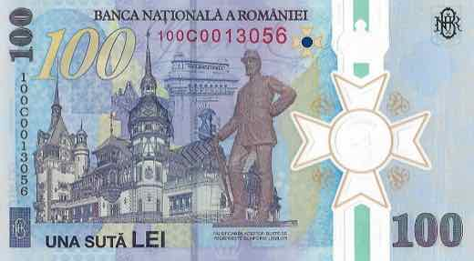
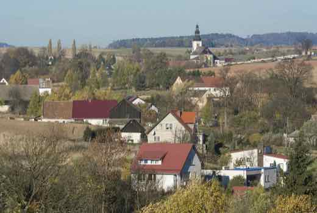

✅ Probat
Afirmații susținute de dovezi verificabile. Sursele sunt lângă fiecare, ca să le puteți controla singuri.
737 verificări, cele mai noi întâi. Vezi și: ❌ Contrazis · ⚠️ Contestat · 🔍 În verificare

SUA și Canada anunță un acord tentativ pe tarife — oțelul și aluminiul, înjumătățite la 25%, dar cele două părți se contrazic pe lactate
La două zile după ce Donald Trump a amânat in extremis tariful de 50% pe bunuri canadiene, Canada și SUA au anunțat pe 19-20 august 2026 un acord comercial…

Cel mai amplu atac rusesc asupra Kievului din ultimele săptămâni: bilanțul morților a crescut de la 12 la cel puțin 16, pe măsură ce echipele de salvare căutau sub dărâmături
Rusia a lovit Kievul cu rachete balistice, rachete de croazieră Kalibr și drone în noaptea de 19 spre 20 august 2026, în cel puțin 12 locații din capitală…

Încă o dronă a intrat în spațiul aerian românesc și a căzut lângă Grindu, Tulcea, în noaptea de 19 spre 20 august
MApN a raportat că o țintă aeriană a intrat în spațiul aerian național lângă Galați și s-a prăbușit la 4 km de Grindu, Tulcea. Nu au fost victime sau pagube…

Guvern vs. ÎCCJ: a patra amânare — Curtea Supremă mută pronunțarea pe restanțele magistraților la 3 septembrie, CCR își amână și ea verdictul pentru 23 septembrie
Curtea de Apel București a obligat pe 5 mai Guvernul și Ministerul Finanțelor să plătească aproximativ 4,8-5,2 miliarde de lei (~1 miliard de euro) în…

Șeful Statului Major iranian avertizează statele din Golf: orice ajutor logistic pentru avioanele-cisternă americane „echivalează cu participarea” la război
Pe 19 august 2026, generalul-maior Ali Abdollahi, șeful Statului Major al forțelor armate iraniene, a scris pe X că prezența avioanelor-cisternă americane de…
Presa de stat chineză laudă „Drumul de gheață al mătăsii” prin Arctica drept ocolire a haosului din Hormuz. Ce arată analiștii independenți
Ce SUSȚINE presa de stat chineză (Global Times): că noua rută maritimă arctică „Ice Silk Road” (China-Europe Arctic Express), operată de compania Sea Legend…

Germania prelungește a patra oară controalele la toate granițele — până în martie 2027, deși Comisia Europeană cere renunțarea treptată
Ministrul german de interne Alexander Dobrindt a notificat Comisia Europeană, pe 18-19 august 2026, că verificările introduse la toate cele nouă granițe…

Comisia de constituționalitate a Senatului aprobă, 6 la 3, anchetarea întâlnirii nedeclarate Bolojan–Tănăsescu; rezoluția merge acum la votul plenului
Comisia de constituționalitate a Senatului a votat marți, 18 august 2026, cu 6 voturi la 3, declanșarea unei anchete parlamentare privind întâlnirea…

Kim Yo Jong spune că nu știe de niciun contact recent Trump–Kim și că exercițiile SUA–Coreea de Sud rămân „provocatoare” chiar și scurtate
🌍 Kim Yo Jong, sora liderului nord-coreean Kim Jong Un, a declarat printr-un comunicat KCNA că „nu știe absolut nimic” despre presupuse contacte recente…

Al doilea suspect din ancheta Nord Stream, arestat în Croația — pe platoul unui film despre exact acest sabotaj
Parchetul Federal german a anunțat miercuri, 19 august 2026, arestarea în Croația a scafandrului ucrainean identificat oficial drept „Vladimir Z.” — al…

Fostul ministru al Apărării al Ucrainei cere alegeri în plin război: „Democrația nu poate fi ținută ostatică de Rusia” — a doua zi, Parlamentul confirmă un nou ministru, în plină anchetă de corupție la Kiev
Mykhailo Fedorov, demis în iulie 2026 din funcția de ministru al Apărării după un conflict cu comandantul suprem Oleksandr Syrskyi, a cerut pe 18 august…

Coreea de Nord a deschis rezervele de stat de cereale în South Hwanghae, după ce fermierii au rămas fără mâncare
Potrivit Daily NK, publicație specializată pe Coreea de Nord care lucrează cu o rețea de surse anonime din interiorul țării, autoritățile nord-coreene au…

Armata israeliană închide fără acuzații penale ancheta morții lui Zomi Frankcom — Australia cheamă ambasadorul Israel
Armata israeliană (IDF) a anunțat pe 19 august 2026 că nu va înainta acuzații penale în cazul loviturii aeriene din aprilie 2024 asupra unui convoi World…

Bursele din Tokyo și Seul se prăbușesc: Kospi -6,4% cu întrerupător de circuit activat, Nikkei -3,2%
Indicii bursieri din Coreea de Sud și Japonia au căzut abrupt miercuri, 19 august 2026: Kospi a pierdut până la 6,4%, declanșând întrerupătorul automat de…

Ministrul israelian Ben-Gvir cere „30-40 de eliminări pe noapte” în Gaza — Franța, Germania și ONU condamnă declarația
Ministrul israelian al securității naționale, Itamar Ben-Gvir, a spus într-un podcast cu un fost ostatic din Gaza că Israelul ar trebui să „elimine 30-40” de…

Guvernul a aprobat Strategia feroviară 2026-2030, exact pe calea pe care CCR a spus deja că un guvern demis n-o poate lua
Guvernul a aprobat miercuri, 19 august 2026, printr-o hotărâre de guvern (HG), Strategia de dezvoltare a infrastructurii feroviare 2026-2030 — document de…

Consiliul Concurenței face inspecții la Philips România și la 10 distribuitori, suspectați de împărțirea pieței echipamentelor medicale din spitale
Consiliul Concurenței a controlat, pe 19 august 2026, sediile Philips România și ale altor 10 distribuitori, suspectați de o înțelegere anticoncurențială…
Burduja: România a bugetat prin PNRR doar 80 de milioane de euro pentru stocarea energiei, față de 600 de milioane ale Bulgariei
Fostul ministru al Energiei, Sebastian Burduja, a declarat la Marius Tucă Show (11 august 2026) că România a alocat prin PNRR doar 80 de milioane de euro…

Trump amână cu trei zile tariful de 50% pe bunurile canadiene, la câteva ore de intrarea în vigoare — invocă un „DEAL” cu Carney
Președintele Donald Trump a anunțat în seara de 18 spre 19 august 2026, cu doar câteva ore înainte ca tariful de 50% pe bunuri canadiene de circa 20 de…

Inflația în zona euro urcă la 2,9% în iulie — România rămâne țara cu cea mai mare rată din UE
Eurostat a anunțat pe 19 august 2026 că inflația anuală în zona euro a urcat la 2,9% în iulie, de la 2,8% în iunie, iar în UE la 3,0%, de la 2,9%. România…

Inflația din Marea Britanie urcă la 2,9%, cel mai ridicat nivel din ultimele patru luni
Oficiul Național de Statistică al Marii Britanii (ONS) a anunțat pe 19 august 2026 că inflația anuală a urcat la 2,9% în iulie, de la 2,6% în iunie — cel mai…

ANAF a colectat cu 22,4 miliarde de lei mai mult în primul semestru din 2026, anunță Nazare — parte din creștere vine din majorarea TVA, nu doar din reforme
Ministrul interimar al Finanțelor, Alexandru Nazare, a anunțat pe 19 august 2026 că ANAF a colectat 267,6 miliarde de lei în primele șase luni din 2026, cu…

Aprobarea lui Trump scade la 33% — minim al celui de-al doilea mandat, egal cu cel mai slab scor din primul mandat
Sondajul Reuters/Ipsos încheiat luni, 17 august 2026, arată aprobarea președintelui Donald Trump la 33%, cel mai slab scor din al doilea mandat și egal cu…

Prețurile la pâine, paste și lactate ar putea crește în Europa — Oxford Economics leagă valul de caniculă și seceta de războiul din Ucraina
Firma de analiză economică Oxford Economics estimează o creștere de două cifre a prețurilor alimentare globale în 2026, pe fondul unei combinații de secetă…
Nicușor Dan: „Argumentele mele erau solide” — USR îl reconfirmă pe Fritz președinte, în plină criză a mandatului de primar
După decizia CCR din 17 august 2026, care menține termenul de 30 de zile ce îl poate lăsa pe Dominic Fritz fără mandatul de primar al Timișoarei…

Ministrul chinez de externe Wang Yi ajunge azi la Seul — prima vizită de sine stătătoare din 2021, la două zile după ce Trump a redus exercițiile SUA–Coreea de Sud
🌍 Wang Yi a început miercuri, 19 august 2026, o vizită de două zile la Seul, la invitația ministrului sud-coreean de externe Cho Hyun — prima sa vizită de…

Premierul Malaeziei spune că „Taiwanul e parte a Chinei” — Taipei acuză legitimarea folosirii forței pentru reunificare
Într-un interviu pentru Al Jazeera din 16 august 2026, premierul malaysian Anwar Ibrahim a spus: „Văd Taiwanul ca parte a Chinei, e o singură Chină, e…

Bolojan s-a întâlnit nedeclarat cu șefa CCR, cu trei zile înainte de decizia pe Legea Integrității — Senatul a deschis o anchetă
Premierul interimar Ilie Bolojan s-a văzut, vineri, 14 august 2026, cu președinta CCR Simina Tănăsescu, în biroul președintelui Senatului — întâlnire…

Comisia de Constituționalitate a Senatului decide să ancheteze întâlnirea secretă Bolojan-Tănăsescu, cu trei zile înainte de decizia CCR pe Legea Integrității
Comisia de Constituționalitate a Senatului a votat marți, 18 august 2026, cu 6 voturi pentru și 3 împotrivă, declanșarea unei verificări privind întâlnirea…

Bolojan, după decizia CCR pe Legea ANI: „Vendetele politice cresc riscul ca România să piardă bani și credibilitate”
Premierul interimar Ilie Bolojan a reacționat pe 18 august 2026 la decizia CCR care menține termenul de 30 de zile ce îl poate lăsa pe Dominic Fritz fără…

Șefa CCR explică întâlnirea cu Bolojan — „doar despre spații”; ÎCCJ cere clarificări și invocă litigiul de 4,8 miliarde de lei pe salariile magistraților, unde premierul e parte
Președinta CCR, Simina Tănăsescu, a explicat într-un interviu pentru Recorder că întâlnirea ei neanunțată cu premierul interimar Ilie Bolojan, pe 14 august…

Israel lovește opt raiduri aeriene o bază din Idlib, Siria — prima lovitură asupra activelor guvernului sirian din martie, Turcia respinge acuzațiile
🌍 Israelul a efectuat, în noaptea de 17 spre 18 august 2026, opt raiduri aeriene asupra bazei Abu al-Duhur din provincia Idlib, nord-vestul Siriei, lângă…
Întâlnirea neanunțată dintre șefa CCR și Bolojan, cu trei zile înainte de decizia pe Legea Integrității: ce e dovedit și ce rămâne suspiciune
Președinta Curții Constituționale, Simina Tănăsescu, s-a întâlnit vineri, 14 august 2026, neanunțat, cu premierul interimar Ilie Bolojan, în biroul…

Bolojan, după decizia CCR pe Legea ANI: „Vendetele politice cresc riscul ca România să piardă bani și credibilitate”
Pe 18 august 2026, premierul interimar Ilie Bolojan a reacționat la decizia CCR din 17 august care menține termenul de 30 de zile ce îl poate lăsa pe Dominic…

Germania a avut cele mai mari exporturi lunare din istorie în iunie 2026, iar încrederea investitorilor a crescut a patra lună la rând, în ciuda nivelului scăzut al Rinului
Oficiul Federal German de Statistică (Destatis) a anunțat pe 7 august 2026 exporturi de 139,3 miliarde de euro în iunie — cel mai ridicat nivel lunar…

India semnează un contract de leasing de 1.943 de crore rupii pentru două drone MQ-9B Sea Guardian, pentru marina sa
Ministerul indian al Apărării a semnat, pe 17 august 2026, cu General Atomics Aeronautical Systems un contract de leasing pe 30 de luni pentru două drone de…

Rusia cheamă ambasadorul Japoniei, în oglindă, după ce Tokyo a protestat față de vizita lui Putin în Kurile
După ce Japonia convocase ambasadorul rus pentru vizita lui Putin pe insula Iturup (13 august 2026), Moscova a convocat, la rândul ei, ambasadorul japonez…

Iran amenință cu o postură „pe deplin ofensivă” în Hormuz, chiar în ziua în care a expirat termenul de 60 de zile cu SUA
Un oficial iranian de rang înalt, necitat nominal, a declarat pentru Reuters că Iranul se pregătește să treacă la o postură „pe deplin ofensivă” în…

Rusia trimite Iranului componente de dronă și explozibili prin Marea Caspică, arată un document guvernamental european citat de NBC News
NBC News a obținut un document guvernamental european, verificat de un oficial occidental, potrivit căruia Rusia expediază componente de dronă, muniție și…

Transportatorii cer Parlamentului să plafoneze real adaosul comercial la carburanți: „Legea 162 nu plafonează nimic”, spune președintele FORT
Federația Operatorilor Români de Transport (FORT) a cerut marți, 18 august 2026, Parlamentului să modifice Legea 162/2026 și să introducă un control real al…
Grindeanu admite că nu are cele 233 de voturi pentru un nou guvern; Bolojan spune că un vot în august e „puțin probabil”
Liderul PSD Sorin Grindeanu a recunoscut pe 17 august 2026 că „astăzi, nu” are cele 233 de voturi necesare pentru învestirea unui nou guvern, iar premierul…

Incendiile din Europa devin o problemă economică: pierderi de 43 de miliarde de euro vara trecută, doar 500 de milioane acoperite de asigurări
Pe fondul valului de incendii de vegetație din Grecia, Croația, Belgia, Franța, Germania și Spania, Reuters relatează, într-un articol reluat de BURSA pe 18…
Președintele Letoniei: războiul hibrid al Rusiei în Europa „se întâmplă acum”, nu abia în viitor
Președintele Letoniei, Edgars Rinkevics, a declarat luni, 17 august 2026, la o conferință de presă lângă granița cu Belarus, că războiul hibrid al Rusiei…
Departamentul de Justiție al SUA trimite circa 1.000 de monitori electorali la alegerile de la jumătatea mandatului din noiembrie 2026 — cel mai mare număr sub o administrație republicană
Harmeet Dhillon, procuroarea generală adjunctă care conduce Divizia de Drepturi Civile a Departamentului de Justiție, a anunțat luni, 17 august 2026, că…

Raportul lui Nicușor Dan despre anularea alegerilor din 2024, amânat pentru a patra oară — Administrația Prezidențială spune că a devenit o analiză pe două decenii de „război hibrid” rusesc
Președintele Nicușor Dan a promis, succesiv, publicarea unui raport despre anularea alegerilor prezidențiale din 2024 „în cel mai scurt timp” (mai 2025)…

Atac rusesc cu rachetă asupra satului Pecenihî, din regiunea Harkov: cel puțin 10 morți
Rusia a lovit marți dimineață, 18 august 2026, satul Pecenihî din regiunea Harkov, la aproximativ 40 km de graniță, ucigând cel puțin 10 oameni și rănind…

Sorana Cîrstea s-a calificat în optimi la Cincinnati, după abandonul Annei Kalinskaya — o așteaptă Jessica Pegula
Sorana Cîrstea (36 de ani, cap de serie 15) a trecut de rusoaica Anna Kalinskaya, scor 6-7(4), 6-1, 5-0, meciul fiind întrerupt de mai multe ori de ploaie și…
Randamentele obligațiunilor guvernamentale din SUA, Marea Britanie, Germania și Franța au urcat la maxime din 2008, pe fondul războiului SUA-Iran
Costurile de împrumut ale marilor economii au urcat în august 2026 la niveluri nemaivăzute de la criza financiară din 2008, pe fondul creșterii prețului…
Liechtenstein renunță la regula moștenirii tronului doar de către bărbați
Casa Princiară de Liechtenstein a anunțat, de ziua națională, o schimbare istorică: trece de la moștenirea rezervată bărbaților la primogenitura absolută…
Ungaria scufundă baraje pe Dunăre ca să salveze centrala nucleară de la Paks, amenințată de secetă
Nivelul Dunării a scăzut atât de mult încât Ungaria riscă să oprească centrala nucleară de la Paks, care asigură în mod normal aproape jumătate din…

BAC 2026, sesiunea de toamnă: 33,8% dintre candidați au promovat, cea mai mare rată din ultimii ani
Ministerul Educației a publicat marți, 18 august, primele rezultate la bacalaureat pentru sesiunea de toamnă: 33,8% dintre candidații prezenți au promovat…

1.500 de șoferi de autobuz paralizează nordul Londrei: 26 de zile de grevă din cauza căldurii din cabine
Peste 1.500 de șoferi de autobuz Arriva London North, din 8 depouri, au intrat în grevă pe 14 august, cu un nou val chiar azi, 18-21 august — parte dintr-un…

Datoria externă a României a ajuns la 232 de miliarde de euro — cifra economistului Radu Georgescu se confirmă la BNR
Economistul Radu Georgescu a avertizat pe 17 august că datoria externă a României a urcat la 232 de miliarde de euro, „cea mai mare sumă din istorie”, față…

Rusia amenință Marea Britanie cu „un preț” după relatări despre drone britanice folosite adânc în teritoriul rus
Ambasada Rusiei la Londra a acuzat Marea Britanie de a deveni „complice” la atacurile ucrainene, după ce Sunday Times a scris că drone produse de companii…

Guvernul a convocat un comitet de urgență: rezervele de cărbune ar acoperi doar 4-5 zile
Cu ambele reactoare de la Cernavodă oprite din cauza secetei, Guvernul a convocat pe 18 august un comitet de urgență pentru energie. Potrivit sindicaliștilor…

Deputatul AUR Mohammad Murad propune o „Celulă de Criză” pentru economie, cu mandat de 15 zile — datele INS arată o scădere reală a ocupării
Deputatul AUR Mohammad Murad, președintele Comisiei pentru Antreprenoriat și Turism, a convocat marți, 18 august 2026, toate partidele parlamentare pentru…

Senatul respinge cererea de comisie de anchetă pe tema unei presupuse întâlniri Bolojan–președinta CCR, cu puține zile înainte ca instanța să reia dezbaterile pe Legea Integrității
Senatorul Ninel Peia (grupul PACE — Întâi România) a cerut, pe 17 august 2026, înființarea unei comisii de anchetă privind o întâlnire care ar fi avut loc pe…
Șefa CCR s-a retras ca raportor pe Legea Integrității, după scandalul întâlnirii cu Bolojan — Curtea a decis luni, dar comisia de anchetă a fost respinsă în Senat
Președinta CCR, Simina Tănăsescu, s-a retras ca judecător-raportor pe dosarul Legii Integrității după ce s-a aflat despre o întâlnire neanunțată cu premierul…

Întâlnirea neanunțată Bolojan–Tănăsescu ajunge la CSM și în Parlament; Senatul respinge comisia de anchetă, CCR și premierul resping suspiciunile
Pe 14 august 2026, premierul interimar Ilie Bolojan și președinta CCR, Elena-Simina Tănăsescu, s-au întâlnit neanunțat în biroul președintelui Senatului, cu…

Grupul PACE cere comisie de anchetă în Senat pentru întâlnirea nedezvăluită dintre Ilie Bolojan și președinta CCR, Simina Tănăsescu
Grupul parlamentar PACE – Întâi România a cerut, pe 16 august 2026, o comisie de anchetă a Senatului privind o întâlnire din 14 august, în biroul…